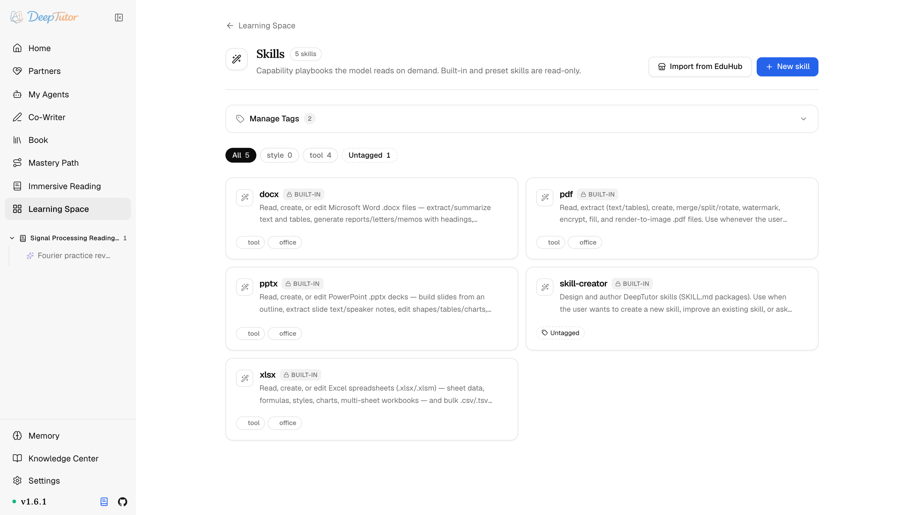

DeepTutor 生態Skill 擴充
1 個 MD 檔案教會 AI 做事！DeepTutor 4 大 Office 技能開箱即用，附上手教學！｜零度解說
使用內建 Skill、本機創作、ClawHub 或 EduHub 社群目錄，為 DeepTutor 加入可複用的 SKILL.md 工作手冊。
原文連結：https://docs.deeptutor.info/zh-cn/ecosystem/skills/
這兩天翻 DeepTutor 的擴充體系，我發現它擴充 AI 的方式跟預想的完全不一樣。
不加服務，不跑行程，而是讓模型按需去讀一份 SKILL.md 工作手冊，也就是 Skill（技能）。
不用增加任何新的可執行服務，就能教 DeepTutor 一套流程、一種風格，或者某個領域的行為方式。
痛點也很現實：想讓 AI 穩定複用你的固定流程，總不能每次都在提示詞裡重複一大段。Skill 就是把這段流程固化成檔案，隨取隨用。
接下來我們看看在哪管、怎麼匯入、怎麼發布。
瀏覽與管理 Skill
開啟學習空間 → Skills。
Skill 支援標籤與搜尋；內建 office skill（docx、pdf、pptx、xlsx）和預設為只讀，你自己的 Skill 則可以隨著工作流持續演進。

一份實用的 Skill，應該說清楚四件事：什麼時候使用、需要哪些輸入、哪些步驟或約束不可忽略，以及成功輸出長什麼樣。
不想從空檔案開始？內建的 skill-creator 會幫你把這套結構寫出來。
從 EduHub 匯入
選擇 Import from EduHub，可以直接瀏覽社群 Skill 並下載到自己的庫裡。
相信不少朋友也是透過 EduHub 那個入口，第一次裝上社群 Skill 的。
匯入內容透過安全閘門後才會可用。
發現、審閱、安全檢查、發布與版本管理的完整細節，見 EduHub。
從命令列安裝與發布
命令列工具（CLI）還支援其他目錄，並能發布 Skill：
deeptutor skill install clawhub:<slug>
deeptutor skill login
deeptutor skill publish <directory>
deeptutor skill updatelogin 會在瀏覽器中完成 Hub 授權；publish 上傳一個 Skill 目錄；update 列出你發布過的包，方便發布新版本或回滾。
裝好之後，這些 Skill 和內建的一樣，由模型按需讀取。
一個 MD 檔案就能讓 AI 穩定複用整套流程，用下來確實爽歪歪。
最後照例提醒一句：部署過程遇到問題，歡迎在留言區留言，把報錯的完整日誌貼出來，我看到會回覆。